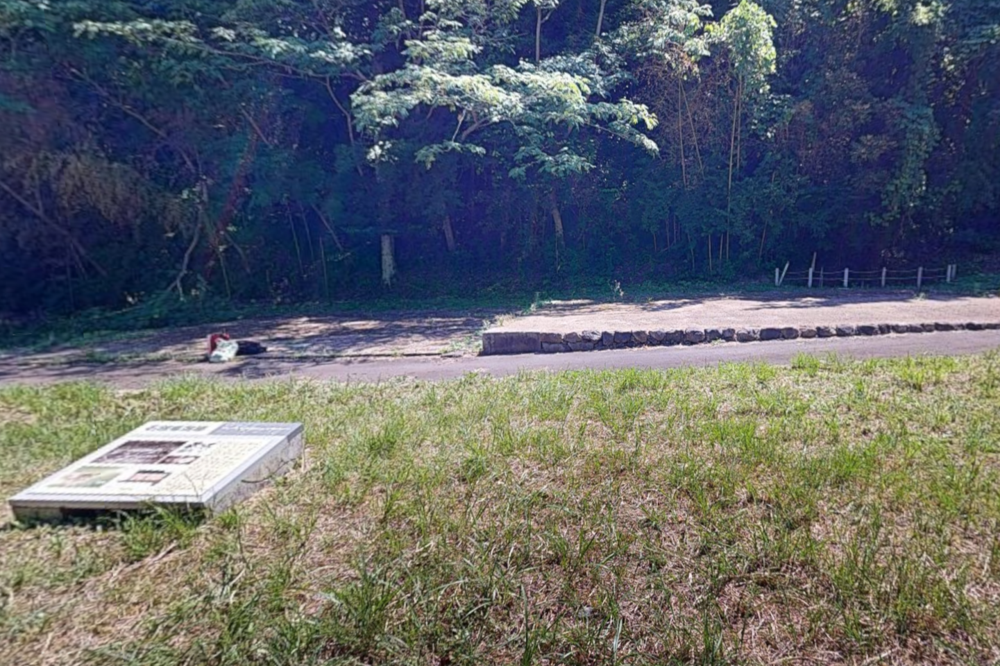
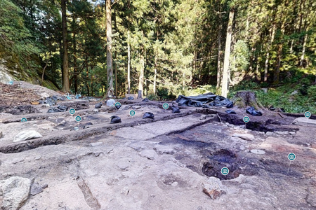
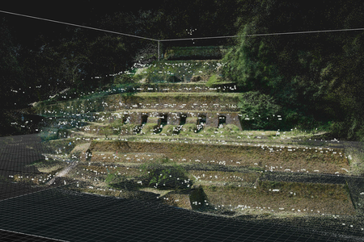
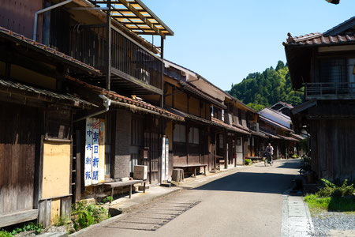
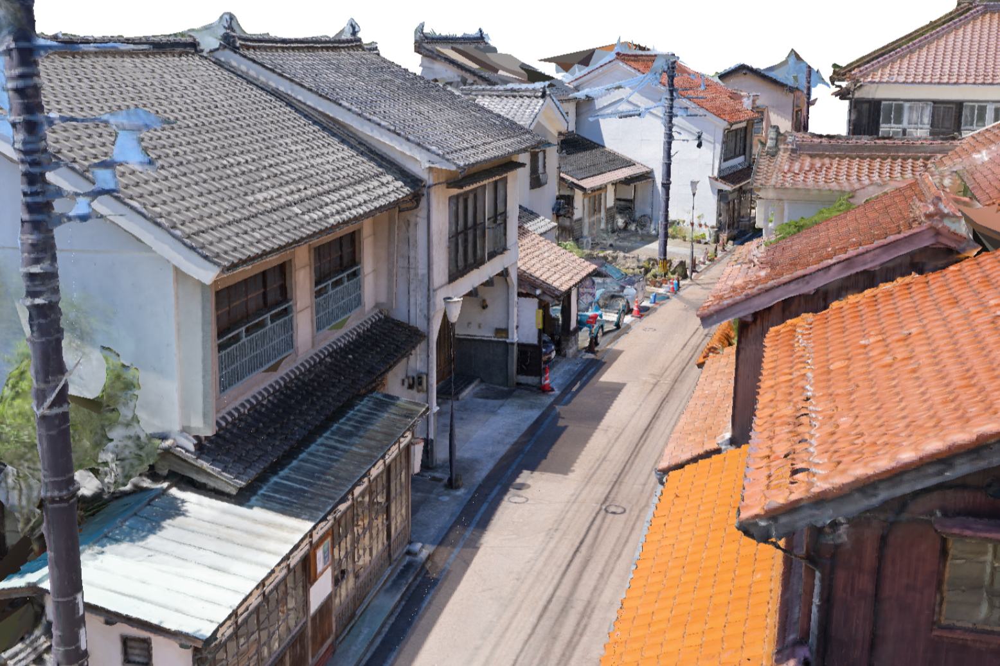
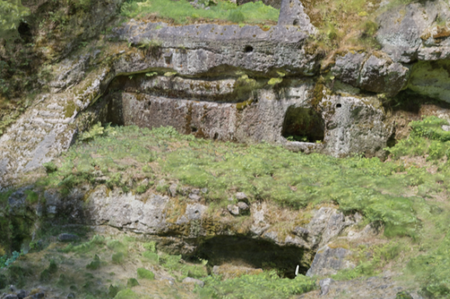

<!DOCTYPE html>
<html>
<head>
  <title>Iwami Area Map</title>
  <meta charset="utf-8">
  <meta name="viewport" content="width=device-width, initial-scale=1">
  <link rel="stylesheet" href="https://unpkg.com/leaflet/dist/leaflet.css" />
  <style>
    #map { height: 550px; width: 100%; }

    .pano-btn {
      display: inline-block;
      margin-top: 12px;
      padding: 14px 24px;
      background: #0066cc;
      color: white;
      font-weight: bold;
      font-size: 16px;
      text-decoration: none;
      border-radius: 10px;
      box-shadow: 0 4px 8px rgba(0,0,0,0.2);
    }
    .pano-btn:hover { background: #0055aa; }
  </style>
</head>
<body>

<div id="map"></div>

<script src="https://unpkg.com/leaflet/dist/leaflet.js"></script>

<script>
  const map = L.map('map').setView([35.112870, 132.445668], 14);

  // --- Base map layers ---
  const osm = L.tileLayer(
    'https://{s}.tile.openstreetmap.org/{z}/{x}/{y}.png',
    { attribution: '© OpenStreetMap contributors' }
  );
 
  const esriSatellite = L.tileLayer(
    "https://server.arcgisonline.com/ArcGIS/rest/services/World_Imagery/MapServer/tile/{z}/{y}/{x}",
    { attribution: "Tiles © Esri" }
  );

  // GSI orthophoto
  const gsiOrtho = L.tileLayer(
    'https://maps.gsi.go.jp/xyz/ort/{z}/{x}/{y}.jpg',
    { attribution: '国土地理院（オルソ画像）' }
  );

  // GSI pale style vector-like map
  const gsiPale = L.tileLayer(
    'https://maps.gsi.go.jp/xyz/pale/{z}/{x}/{y}.png',
    { attribution: '国土地理院' }
  );

  // Default layer
  osm.addTo(map);

  // Layer switcher
  L.control.layers({
    "OpenStreetMap (Default)": osm,
    "Satellite (Esri World Imagery)": esriSatellite,
    "Satellite (GSI Japan Orthophoto)": gsiOrtho,
    "Historic (GSI Pale Style)": gsiPale
  }).addTo(map);


  // ----------------------------------------
  // TEST 360° MARKER
  // ----------------------------------------
  L.marker([35.681236, 139.767125])
    .addTo(map)
    .bindPopup(`
      <h3>360° Panorama Test</h3>
      <br><br>
      <p>Click below for immersive full-screen 360° view</p>
      <iframe width="100%" height="320" frameborder="0"
        allow="xr-spatial-tracking; gyroscope; accelerometer"
        allowfullscreen scrolling="no"
        src="https://kuula.co/share/collection/7HHcf?logo=1&info=1&fs=1&vr=0&sd=1&thumbs=1">
      </iframe>
    `, { maxWidth: 400 })
    .bindTooltip("360° Test", {permanent: true,direction: "top",offset: [-15,-20]});

  // ----------------------------------------
  // ORIGINAL IWAMI GINZAN MARKERS
  // ----------------------------------------
  L.marker([35.0953056, 132.44455555555555]).addTo(map).bindPopup(`
    <h3>大久保間歩</h3>
    <br>
    <p>石見銀山でも最大の坑道であった大久保間歩の一部を見学できます（2025年7月計測）</p>
    <a href="https://my.matterport.com/show/?m=horoqkThL2i" target="_blank">Matterportで見る</a>
  `).bindTooltip("大久保間歩", {permanent:true,direction:"top",offset:[-15,-20]});

  L.marker([35.105943422091485, 132.45192874794677]).addTo(map).bindPopup(`
    <h3>石見銀山世界遺産センター</h3>
    <br>
    <p>展示室内部を見学できます（2024年12月計測）</p>
    <a href="https://my.matterport.com/show/?m=5JKWdRLs41V" target="_blank">Matterportで見る</a><br>
    <a href="https://lcc-viewer.xgrids.com/pub/2ac91467-b9e3-456a-bc9c-acb74ca84d9a" target="_blank">PortalCamスキャンを見る</a>
  `).bindTooltip("石見銀山世界遺産センター", {permanent:true,direction:"top",offset:[-15,-20]});

  L.marker([35.09844555959177, 132.44022909236787]).addTo(map).bindPopup(`
    <h3>石銀地区</h3>
    <br>
    <p>江戸時代の鉱山町「石銀地区」の一部を見学できます</p>
    <a href="https://my.matterport.com/show/?m=jruDkQ6CTAE" target="_blank">Matterportで見る</a>
  `).bindTooltip("石銀地区", {permanent:true,direction:"top",offset:[-15,-20]});

  L.marker([35.09960904790995, 132.43113267470957]).addTo(map).bindPopup(`
    <h3>栃畑谷（発掘調査地区）</h3>
    <br>
    <p>江戸時代の製錬炉等が出土した発掘調査の現場を見学できます（2025年7月計測）</p>
    <a href="https://my.matterport.com/show/?m=FReiUj6kHRr" target="_blank">Matterportで見る</a>
  `).bindTooltip("栃畑谷", {permanent:true,direction:"top",offset:[-15,-20]});

  L.marker([35.10540710829342, 132.43918545452155]).addTo(map).bindPopup(`
    <h3>清水谷精錬所跡</h3>
    <br>
    <p>明治時代に造られた精錬所の遺跡を見学できます（2025年7月計測）</p>
    <a href="https://my.matterport.com/show/?m=E6tRvmru3P5" target="_blank">Matterportで見る</a>
  `).bindTooltip("清水谷精錬所跡", {permanent:true,direction:"top",offset:[-15,-20]});

  L.marker([35.115349488774065, 132.44588041268344]).addTo(map).bindPopup(`
    <h3>伝建地区「大森町」</h3>
    <br>
    <p>江戸時代の街並みの一部を見学できます（2024年12月計測）</p>
  `).bindTooltip("大森町", {permanent:true,direction:"top",offset:[-15,-20]});

  L.marker([35.095985785248146, 132.347967808941]).addTo(map).bindPopup(`
    <h3>伝建地区「温泉津」</h3>
    <br>
    <p>石見銀山の外港として発展した港町「温泉津」の街並みを見学できます（2025年7月計測）</p>
  `).bindTooltip("温泉津", {permanent:true,direction:"top",offset:[-15,-20]});

  L.marker([35.0958889, 132.44244444444445]).addTo(map).bindPopup(`
    <h3>釜屋間歩</h3>
    <br>
    <p>釜屋間歩の遺構を見学できます（2025年7月計測）</p>
    <a href="https://my.matterport.com/show/?m=zGnuNLD4WJu" target="_blank">Matterportで見る</a><br>
    <p>Click below for immersive full-screen 360° view</p>
      <iframe width="100%" height="320" frameborder="0"
        allow="xr-spatial-tracking; gyroscope; accelerometer"
        allowfullscreen scrolling="no"
        src="https://kuula.co/share/hr0V7/collection/7H6wB?logo=1&info=1&fs=1&vr=0&sd=1&thumbs=1">
      </iframe>
  `).bindTooltip("釜屋間歩", {permanent:true,direction:"top",offset:[-15,-20]});

  L.marker([35.10053934337973, 132.4301704561334]).addTo(map).bindPopup(`
    <h3>石見銀山街道「龍源寺間歩前」</h3>
    <a href="https://superspl.at/view?id=ccf40b21" target="_blank">SuperSplatで見る</a><br>
    <a href="https://superspl.at/view?id=61f4cc0d" target="_blank">SuperSplatで見る（低木版）</a><br>
    <p>Click below for immersive full-screen 360° view</p>
      <iframe width="100%" height="320" frameborder="0"
        allow="xr-spatial-tracking; gyroscope; accelerometer"
        allowfullscreen scrolling="no"
        src="https://kuula.co/share/collection/7HBXf?logo=1&info=1&fs=1&vr=0&sd=1&thumbs=1">
      </iframe>
  `).bindTooltip("石見銀山街道", {permanent:true,direction:"top",offset:[-15,-20]});

  L.marker([35.0997660, 132.4287969]).addTo(map).bindPopup(`
    <h3>龍源寺間歩</h3>
    <p>Click below for immersive full-screen 360° view</p>
      <iframe width="100%" height="320" frameborder="0"
        allow="xr-spatial-tracking; gyroscope; accelerometer"
        allowfullscreen scrolling="no"
        src="https://kuula.co/share/collection/7HBXl?logo=0&info=1&fs=1&vr=0&sd=1&thumbs=1">
      </iframe>
  `).bindTooltip("龍源寺間歩", {permanent:true,direction:"top",offset:[-15,-20]});

  L.marker([35.0991252, 132.4316749]).addTo(map).bindPopup(`
    <h3>佐毘賣山神社</h3>
    <p>Click below for immersive full-screen 360° view</p>
      <iframe width="100%" height="320" frameborder="0"
        allow="xr-spatial-tracking; gyroscope; accelerometer"
        allowfullscreen scrolling="no"
        src="https://kuula.co/share/collection/7HBJR?logo=1&info=1&fs=1&vr=0&sd=1&thumbs=1">
      </iframe>
  `).bindTooltip("佐毘賣山神社", {permanent:true,direction:"top",offset:[-15,-20]});

  L.marker([35.1016839, 132.4323535]).addTo(map).bindPopup(`
    <h3>福神山間歩</h3>
    <p>Click below for immersive full-screen 360° view</p>
      <iframe width="100%" height="320" frameborder="0"
        allow="xr-spatial-tracking; gyroscope; accelerometer"
        allowfullscreen scrolling="no"
        src="https://kuula.co/share/collection/7HBJS?logo=1&info=1&fs=1&vr=0&sd=1&thumbs=1">
      </iframe>
  `).bindTooltip("福神山間歩", {permanent:true,direction:"top",offset:[-15,-20]});

  L.marker([35.1067440, 132.4388780]).addTo(map).bindPopup(`
    <h3>仙頂山 安養寺</h3>
    <p>Click below for immersive full-screen 360° view</p>
      <iframe width="100%" height="320" frameborder="0"
        allow="xr-spatial-tracking; gyroscope; accelerometer"
        allowfullscreen scrolling="no"
        src="https://kuula.co/share/collection/7HBJM?logo=1&info=1&fs=1&vr=0&sd=1&thumbs=1">
      </iframe>
  `).bindTooltip("仙頂山 安養寺", {permanent:true,direction:"top",offset:[-15,-20]});

  L.marker([35.1094550, 132.4373116]).addTo(map).bindPopup(`
    <h3>極楽寺「浄土宗」</h3>
    <p>Click below for immersive full-screen 360° view</p>
      <iframe width="100%" height="320" frameborder="0"
        allow="xr-spatial-tracking; gyroscope; accelerometer"
        allowfullscreen scrolling="no"
        src="https://kuula.co/share/collection/7HBJc?logo=0&info=1&fs=1&vr=0&sd=1&thumbs=1">
      </iframe>
  `).bindTooltip("極楽寺", {permanent:true,direction:"top",offset:[-15,-20]});

  L.marker([35.1093277, 132.4383053]).addTo(map).bindPopup(`
    <h3>豊栄神社</h3>
    <p>Click below for immersive full-screen 360° view</p>
      <iframe width="100%" height="320" frameborder="0"
        allow="xr-spatial-tracking; gyroscope; accelerometer"
        allowfullscreen scrolling="no"
        src="https://kuula.co/share/collection/7HBJr?logo=1&info=1&fs=1&vr=0&sd=1&thumbs=1">
      </iframe>
  `).bindTooltip("豊栄神社", {permanent:true,direction:"top",offset:[-15,-20]});

  L.marker([35.1104599, 132.4388713]).addTo(map).bindPopup(`
    <h3>西本寺</h3>
    <p>Click below for immersive full-screen 360° view</p>
      <iframe width="100%" height="320" frameborder="0"
        allow="xr-spatial-tracking; gyroscope; accelerometer"
        allowfullscreen scrolling="no"
        src="https://kuula.co/share/collection/7HBJ1?logo=0&info=1&fs=1&vr=0&sd=1&thumbs=1">
      </iframe>
  `).bindTooltip("西本寺", {permanent:true,direction:"top",offset:[-15,-20]});

  L.marker([35.1101681, 132.4395123]).addTo(map).bindPopup(`
    <h3>下河原吹屋跡</h3>
    <p>Click below for immersive full-screen 360° view</p>
      <iframe width="100%" height="320" frameborder="0"
        allow="xr-spatial-tracking; gyroscope; accelerometer"
        allowfullscreen scrolling="no"
        src="https://kuula.co/share/collection/7HBJD?logo=1&info=1&fs=1&vr=0&sd=1&thumbs=1">
      </iframe>
  `).bindTooltip("下河原吹屋跡", {permanent:true,direction:"top",offset:[-15,-20]});

  L.marker([35.1160220, 132.4453515]).addTo(map).bindPopup(`
    <h3>栄泉寺［曹洞宗］</h3>
    <p>Click below for immersive full-screen 360° view</p>
      <iframe width="100%" height="320" frameborder="0"
        allow="xr-spatial-tracking; gyroscope; accelerometer"
        allowfullscreen scrolling="no"
        src="https://kuula.co/share/collection/7HBXj?logo=0&info=1&fs=1&vr=0&sd=1&thumbs=1">
      </iframe>
  `).bindTooltip("栄泉寺", {permanent:true,direction:"top",offset:[-15,-20]});

  L.marker([35.1189915, 132.4461682]).addTo(map).bindPopup(`
    <h3>観世音寺［高野山真言宗］</h3>
    <p>Click below for immersive full-screen 360° view</p>
      <iframe width="100%" height="320" frameborder="0"
        allow="xr-spatial-tracking; gyroscope; accelerometer"
        allowfullscreen scrolling="no"
        src="https://kuula.co/share/collection/7HBXj?logo=0&info=1&fs=1&vr=0&sd=1&thumbs=1">
      </iframe>
  `).bindTooltip("観世音寺", {permanent:true,direction:"top",offset:[-15,-20]});

  L.marker([35.1200545, 132.4456505]).addTo(map).bindPopup(`
    <h3>西性寺［浄土真宗本願寺派］</h3>
    <p>Click below for immersive full-screen 360° view</p>
      <iframe width="100%" height="320" frameborder="0"
        allow="xr-spatial-tracking; gyroscope; accelerometer"
        allowfullscreen scrolling="no"
        src="https://kuula.co/share/collection/7HBXP?logo=0&info=1&fs=1&vr=0&sd=1&thumbs=1">
      </iframe>
  `).bindTooltip("西性寺", {permanent:true,direction:"top",offset:[-15,-20]});

  L.marker([35.1199996, 132.4480686]).addTo(map).bindPopup(`
    <h3>井戸神社</h3>
    <p>Click below for immersive full-screen 360° view</p>
      <iframe width="100%" height="320" frameborder="0"
        allow="xr-spatial-tracking; gyroscope; accelerometer"
        allowfullscreen scrolling="no"
        src="https://kuula.co/share/collection/7HBX0?logo=1&info=1&fs=1&vr=0&sd=1&thumbs=1">
      </iframe>
  `).bindTooltip("井戸神社", {permanent:true,direction:"top",offset:[-15,-20]});

  L.marker([35.1220844, 132.4459650]).addTo(map).bindPopup(`
    <h3>勝源寺</h3>
    <p>Click below for immersive full-screen 360° view</p>
      <iframe width="100%" height="320" frameborder="0"
        allow="xr-spatial-tracking; gyroscope; accelerometer"
        allowfullscreen scrolling="no"
        src="https://kuula.co/share/collection/7HBXk?logo=0&info=1&fs=1&vr=0&sd=1&thumbs=1">
      </iframe>
  `).bindTooltip("勝源寺", {permanent:true,direction:"top",offset:[-15,-20]});

  L.marker([35.1226334, 132.4484032]).addTo(map).bindPopup(`
    <h3>城上神社</h3>
    <p>Click below for immersive full-screen 360° view</p>
      <iframe width="100%" height="320" frameborder="0"
        allow="xr-spatial-tracking; gyroscope; accelerometer"
        allowfullscreen scrolling="no"
        src="https://kuula.co/share/collection/7HBXp?logo=0&info=1&fs=1&vr=0&sd=1&thumbs=1">
      </iframe>
  `).bindTooltip("城上神社", {permanent:true,direction:"top",offset:[-15,-20]});

  L.marker([35.0955212, 132.3450630]).addTo(map).bindPopup(`
    <h3>愛宕神社</h3>
    <p>Click below for immersive full-screen 360° view</p>
      <iframe width="100%" height="320" frameborder="0"
        allow="xr-spatial-tracking; gyroscope; accelerometer"
        allowfullscreen scrolling="no"
        src="https://kuula.co/share/collection/7HBJn?logo=1&info=1&fs=1&vr=0&sd=1&thumbs=1">
      </iframe>
  `).bindTooltip("愛宕神社", {permanent:true,direction:"top",offset:[-15,-20]});

  L.marker([35.098008, 132.356077]).addTo(map).bindPopup(`
    <h3>登り窯</h3>
    <p>Click below for immersive full-screen 360° view</p>
      <iframe width="100%" height="320" frameborder="0"
        allow="xr-spatial-tracking; gyroscope; accelerometer"
        allowfullscreen scrolling="no"
        src="https://kuula.co/share/collection/7HBJC?logo=1&info=1&fs=1&vr=0&sd=1&thumbs=1">
      </iframe>
  `).bindTooltip("登り窯", {permanent:true,direction:"top",offset:[-15,-20]});

  L.marker([35.095724, 132.346255]).addTo(map).bindPopup(`
    <h3>龍御前神社</h3>
    <p>Click below for immersive full-screen 360° view</p>
      <iframe width="100%" height="320" frameborder="0"
        allow="xr-spatial-tracking; gyroscope; accelerometer"
        allowfullscreen scrolling="no"
        src="https://kuula.co/share/collection/7HBJw?logo=1&info=1&fs=1&vr=0&sd=1&thumbs=1">
      </iframe>
  `).bindTooltip("龍御前神社", {permanent:true,direction:"top",offset:[-15,-20]});

  L.marker([35.0970728, 132.3502313]).addTo(map).bindPopup(`
    <h3>金刀比羅神社</h3>
    <p>Click below for immersive full-screen 360° view</p>
      <iframe width="100%" height="320" frameborder="0"
        allow="xr-spatial-tracking; gyroscope; accelerometer"
        allowfullscreen scrolling="no"
        src="https://kuula.co/share/collection/7HBX4?logo=1&info=1&fs=1&vr=0&sd=1&thumbs=1">
      </iframe>
  `).bindTooltip("金刀比羅神社", {permanent:true,direction:"top",offset:[-15,-20]});

</script>
</body>
</html>


